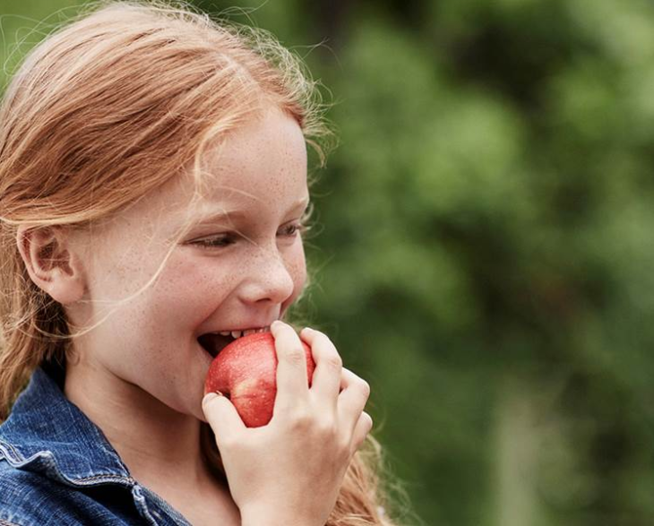
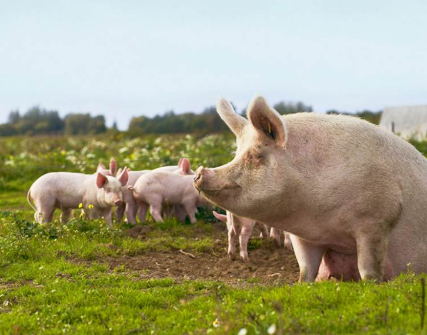
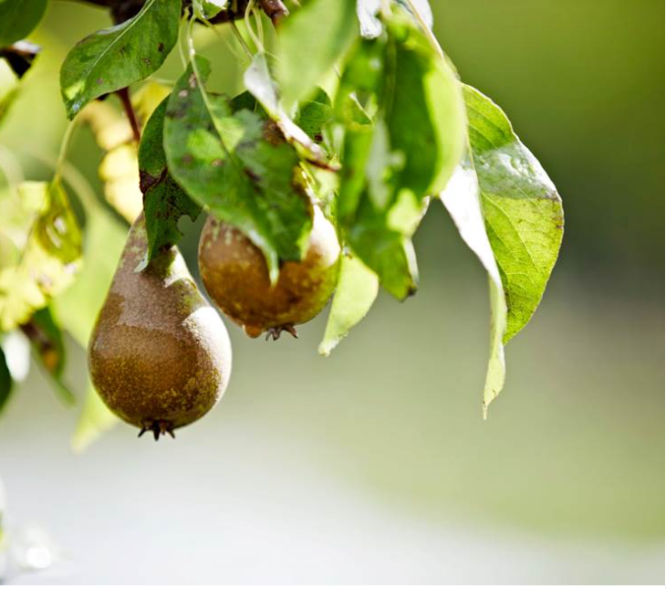
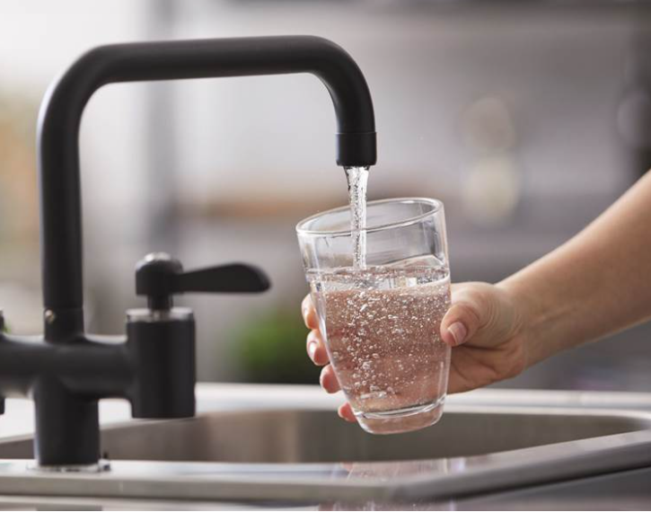
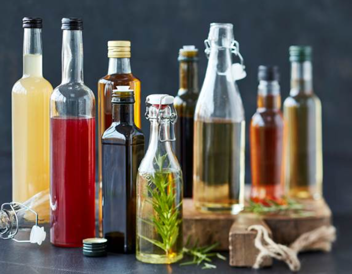
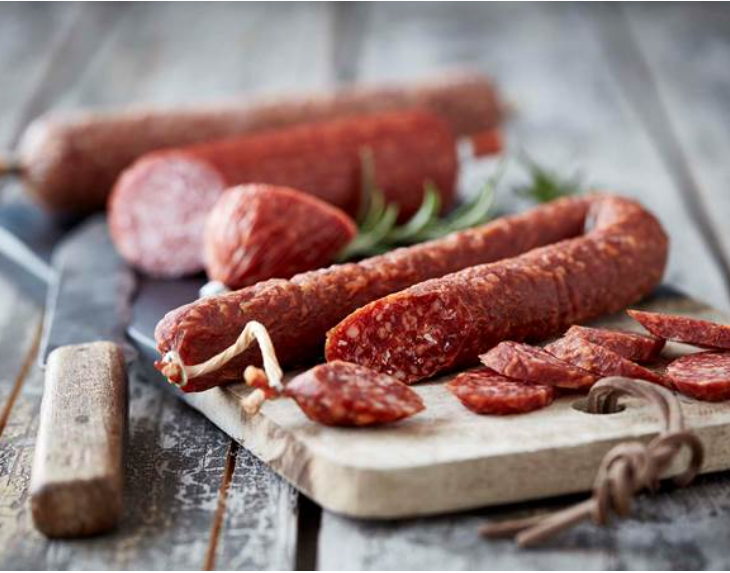
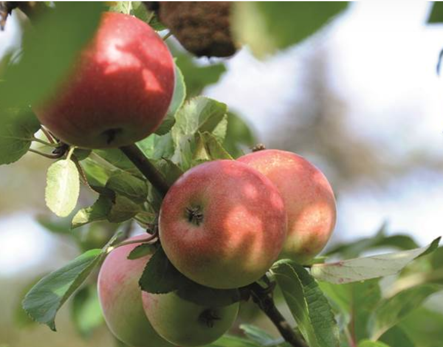

MAD UDEN PESTICIDER
Du kan være sikker på, økologiske fødevarer ikke er sprøjtet med de syntetiske pesticider

DYREVELFÆRD
Økologiske dyr har god plads til at bevæge sig & får økologisk grovfoder

REN OG RIG NATUR
Naturen i og omkring de økologiske arealer er mere varieret og har et rigere dyreliv

RENT GRUNDVAND
Vælger du økologi er du med til at spare vores fælles vand for rester af syntetiske pesticider

INGEN 343 E-NUMRE
I økologisk mad er det kun 53 ud af EUs 396 E-numre, som er lovlige

FÆRRE TILSÆTNINGSSTOFFER
Ø-markede varer er ikke tilsat kunstige farvestoffer og aromaer

NATURLIG VÆKST
Den økologiske landmand lader sine planter vokse i et naturligt tempo uden at bruge kunstgødning og syntetiske pesticider.